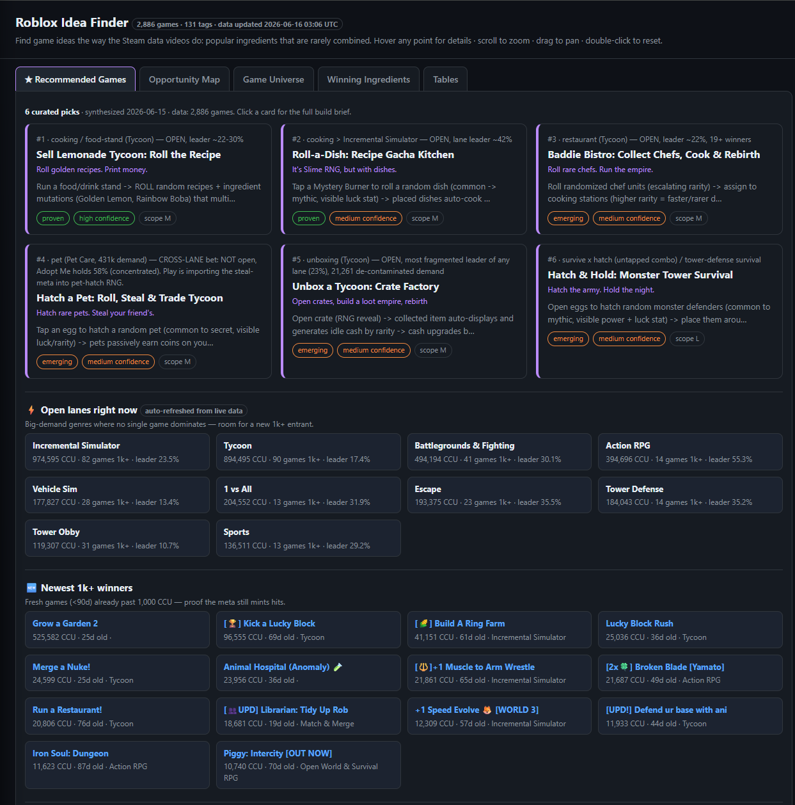
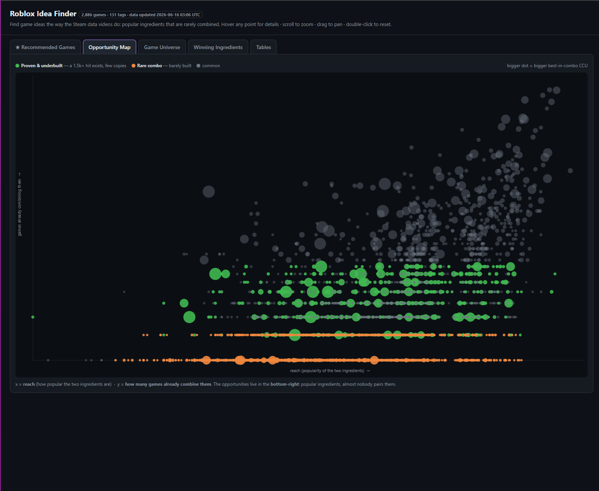

Design proposal/Roblox Idea Finder2,886 games · live
A quant's edge on a chaotic market.
Today the tool shows you everything. It should tell you what to build right now — then let you validate it in the data. This is a redesign that leads with the answer, treats numbers as evidence, and makes the signature Opportunity Map readable in one glance. Dark, dense, terminal-grade. Built for one indie dev who moves fast.
The job
"Show me a proven, open opportunity — and let me trust it fast."
The flow
Decide → Validate → Explore
Constraint
One offline index.html · vanilla JS / canvas / SVG.
Refreshes
Daily — so the design must survive changing numbers & empty lanes.
01
An honest critique
The current build is impressively data-rich and the underlying idea — "popular ingredients rarely combined" — is genuinely sharp. The problem is hierarchy: everything is the same size, the same weight, the same gray. Attention has nowhere to land. Here's where it goes wrong, view by view.
What's working
The thesis. Real CCU evidence. Daily freshness. The Opportunity Map concept is a legitimately novel, defensible viz.
What's underwhelming
No #1. The hero pick reads like row one of a list. Confidence, scope & risk are flat equal-weight pills.
What's broken
The Map's payoff — "bottom-right = opportunity" — is hidden in a caption. The chart never points at an answer.
Current — Recommended Games

123
1
The hero pick isn't a hero
"#1" is tiny gray text in a six-up grid of identical cards. Nothing says this is the one.
2
The meta line is a run-on
"#1 · cooking / food-stand (Tycoon) — OPEN, leader ~22-30%" packs category, lane status, and leader share into one gray sentence. The decisive fact (OPEN) is buried.
3
Trust signals are flattened
"proven / high confidence / scope M" are three identical pills. Confidence (how much to trust this) and scope (how big a build) are different axes and should look different.
Also: briefs truncate mid-word ("…multi…") with no affordance that a card opens a full brief. Descriptions and pitch lines compete for the same emphasis.
Current — Opportunity Map

456
4
The answer is in a footnote
"Opportunities live in the bottom-right" sits in gray caption text below the chart. The chart itself never labels its quadrants or highlights the good zone.
5
"Down is good" fights intuition
Orange opportunity dots pile into a flat band at the bottom. We read charts up-and-right as "better" — so the best ideas sit where the eye expects the worst.
6
Every dot looks equal
~600 points, no callouts, no ranking, unlabeled axes. It's a beautiful cloud that doesn't say "build this." The half-empty top-left is wasted ink.
Game Universe (t-SNE): pretty, but un-actionable — distances are arbitrary and clusters are unlabeled. Winning Ingredients: bars with no 1.0× baseline hide the very thing that defines a "winner." Tables: fine, but disconnected from the cards they should feed.
02
Information architecture
One narrative, three acts. The default view answers the question; the data views exist to validate the answer; the maps are for open-ended exploration. Same six datasets — re-sequenced so the user never starts at a chart.
01Decide
What to build now
The default landing. Ranked picks + live "Right Now" signals.
★ Recommended Games (hero)
⚡ Right Now strip
02Validate
Is the data behind it?
Reachable from any pick. Prove the lane is open & the ingredients win.
◇ Opportunity Map
▮ Winning Ingredients
▤ Combo tables
03Explore
Wander the market
Open-ended. For when you want to find your own angle.
◷ Game Universe map
future: saved ideas / watchlist
Default view — skeleton
Recommended
#01 — HERO PICKbuild this now · brief inline
#02
#03
⚡ OPEN LANES
Lead with #1. The top pick gets a full-width hero with its brief readable inline — no click required to see why it's the call.
Signals stay above the fold. The "Right Now" strip (open lanes, fresh winners) is the live pulse — it earns a permanent spot, not a sub-tab.
Tabs become acts. Rename + reorder the nav to read Decide · Validate · Explore so the IA itself teaches the workflow.
03
Visual system
A terminal, not a toy. One chromatic UI accent (signal blue), a strict semantic palette for opportunity / caution / risk, and a categorical ramp tuned to survive color blindness. Numbers are monospaced and tabular so columns line up like a trading screen.
Semantic color · meaning is fixed
Primary
#4D7CFE
UI accent, links, focus
Opportunity
#3FB950
open lane, proven+underbuilt
Caution
#E0A040
aging evidence, med confidence
Risk
#E5484D
biggest risk, dominated lane
Bold / new
#7B5BFF
bold bets, fresh winner tag
Surfaces · dark ramp
Page#08090C
Panel#101218
Raised#171A21
Hairline border#fff @ 8%
Genre categories · color-blind safe (Okabe–Ito)
Simulation
Obby
Survival
Roleplay
Action
RPG
Party
Other
Eight hues max, each separable under protanopia & deuteranopia. Beyond eight genres, collapse the tail into Other rather than recycling hues.
Typography · three roles
Aa
Space Grotesk
Display & headings. Geometric, a little technical. Sizes 18–52px, weights 500–700.
Aa
IBM Plex Sans
Body & UI copy. Calm, legible at 13–16px. Not Inter — reads more "instrument".
07
JetBrains Mono
All numerals, ranks, CCU, deltas, eyebrows. tabular-nums so columns align.
Spacing · 4px base
4
8
12
16
24
32
48
Dense by default — card padding 16–20px, section rhythm 48px. This is an instrument; whitespace is earned, not sprayed.
Radii
6 chip
9 ctrl
14 card
pill
04
The hero experience
Medium-fidelity. One hero pick gets a full-width card with its thesis, live evidence, confidence, scope and risk legible at a glance — no click to understand the call. #2–#6 sit below as a tighter grid. The "Right Now" strip is permanent.
mockup — rendered in the proposed system
◆Roblox Idea Finder
DecideValidateExplore
updated 2h ago2,886 games · 131 tags
Build this next
6 curated picks · synthesized from 2,886 games
01ProvenOPEN LANE▲ top mover
Sell Lemonade Tycoon: Roll the Recipe
A food-stand tycoon where you roll random recipes (Golden Lemon, Rainbow Boba) that multiply income. Print money. Rebirth. Repeat.
Confidence as a filled meter (not a pill), scope as a segmented S/M/L, and an evidence-age dot so a stale pick can't masquerade as fresh.
05
The build brief
Click a pick → the full brief. The job here is trust: confidence, evidence, risk and scope must be readable before the prose. So the brief opens with a verdict bar, then evidence with freshness, then a risk you can't miss.
← all picks/#01 build brief
01
ProvenOPEN LANE
Sell Lemonade Tycoon: Roll the Recipe
Roll golden recipes. Print money. Rebirth.
Confidence
High
Scope
M
~4–6 wk
Risk
Med
RNG fatigue
Core loop
Run a food-stand → roll a random recipe + ingredient mutation (Golden Lemon, Rainbow Boba) that multiplies income → reinvest into stations → rebirth for permanent luck/income multipliers.
First 30 seconds
Tap to serve customer #1 → instant cash → first recipe roll inside 20s. The gacha dopamine hits before the player can bounce.
Depth — why it lasts
Escalating rarity tiers, mutation stacking, prestige/rebirth, and limited-time seasonal recipes. The luck stat gives a long chase; trading gives a reason to log in daily.
"Show off your golden recipe" + recipe trading + rebirth flex. Built-in clip moments.
Why now · evidence● 2d old · fresh
✓Cooking/food-stand lane OPEN — leader only 22–30%19 winners
✓"cook" tag over-indexes among 1k+ hits1.21× lift
✓"roll" gacha mechanic proven across lanes1.19× lift
~Adjacent winner momentum (Grow a Garden 2)525k · 25d
Incumbent to beat & your edge
A generic restaurant tycoon holds the lane at ~22–30% — no monolith. Your edge: a gacha recipe-roll with a visible luck stat (borrowed from the Grow-a-Garden mutation meta) bolted onto a proven tycoon loop. Nobody pairs them yet.
▲Biggest risk
The "roll everything" meta burns hot and could cool in weeks. If recipe RNG feels unfair, churn spikes hard.
Mitigate: ship with trading + a pity timer day one; instrument the roll-to-quit funnel.
At a glance, the user reads four things in order: confidence (can I trust this?) → scope (can I build it?) → risk (what kills it?) → evidence freshness (is this still true today?). Everything else is supporting prose they can skim.
06
Opportunity Map — make "good" obvious
The single biggest fix: flip the Y axis. Today opportunity lives bottom-right, fighting the universal "up-and-right = better" instinct. Re-encode Y as how under-built a pairing is (rare = high) and the opportunity corner moves to the top-right — where the eye already looks for winners. Then name the zone, shade it, and annotate the standouts.
A shaded, dashed, labeled rectangle in the top-right does what a caption never could: it points at the answer inside the chart.
Rank the dots
Annotate the top 3–5 standouts with labels + leader lines. Everything else recedes to texture. Hover any dot → the combo, best game, CCU.
Connect to picks
Clicking a gold dot jumps to (or generates) a build brief — closing the loop from "validate" back to "decide."
07
The validate & explore views
Light wireframes — the principle in each case is the same: replace "pretty but un-actionable" with "shows the answer." Reasoning and tradeoff noted under each.
Game Universe — drop t-SNE for a labeled genre treemap
Simulation975k CCU · 82 hitsOPEN · leader 23%
Actiontightening · 55%
RPG
Survival
Obby
Roleplay
Party
Other
Incremental Sim
Is t-SNE the right call? No. It's gorgeous but its distances are arbitrary and clusters are unlabeled — you can't act on it. A treemap of genres, each block sized by total CCU and tinted by saturation, answers "which genre has the most demand vs the most competition" in one read.
Tradeoff: you lose the "lonely island = novel look" serendipity. Keep the t-SNE as an optional "explore" toggle for the curious — but don't make it the default for a decision tool.
Winning Ingredients — lollipop with a 1.0× baseline
1.0×
car
1.71×
hide
1.68×
tower
1.50×
cook
1.21×
race
1.09×
build
0.92×
Bars hide the baseline. "Winner" is defined by lift > 1.0× — so 1.0 is the only number that matters, and full-length bars bury it. A dot plot anchored on a dashed 1.0× line makes "above the line = winning ingredient" instant, and lets a losing ingredient sit visibly to the left.
Encode sample size: fade or shrink dots with thin evidence (e.g. 4/18 wins) so a flashy lift on tiny n doesn't mislead.
Tables — terminal density, linked to picks
Combo#Best CCUBest game
harvest × steal2525,582Grow a Garden 2 →
garden × steal5525,582Grow a Garden 2 →
build × Pet Care°3256,255Adopt Me! →
The tables are fine — just orphaned. Keep the dense, sortable two-column layout (proven / untapped), but make every row a launch point: click → the combo pre-filters the Opportunity Map and offers "draft a brief."
Right-align all numerics, tabular figures, monospace. Color CCU on the opportunity scale so the eye scans the column, not the rows.
08
Empty & live states
Data rebuilds daily, so the design has to be honest when reality shifts. Five states the build must ship with — designed, not left to a blank box.
⚠Stale refresh
Top banner when the daily build didn't run: "Data is 2 days old — last refresh Jun 13." Dim the freshness dots site-wide so no pick looks newer than it is.
Lane closed
A once-open lane now DOMINATED (leader > 60%). Don't delete it — show it greyed with the date it closed, so the dev learns the market moved.
Aging evidence
A card whose why-now signal hasn't refreshed in 14+ days: freshness dot turns amber, confidence auto-steps down a notch. Trust degrades with the data.
Empty — 0 fresh winners
Honest copy, not a void: "No new 1k+ games in the last 90 days. The meta's quiet — a good week to ship into less noise."
Day-over-day movers
Incremental Sim ▲ 12%Anime ▼ closedGrow a Garden 2 · NEW
Surface what changed since yesterday so a returning dev re-orients in seconds.
09
Responsive & accessibility
The owner works desktop-first, but the public URL gets opened on phones — so the cards + Right Now strip (the shareable, at-a-glance part) must be excellent on mobile. The canvas maps degrade gracefully rather than contort.
Idea Finder● 2h
01PROVENOPEN
Sell Lemonade Tycoon
Roll golden recipes. Print money.
High confidence · scope M · evidence 2d
⚡ open lanes
Incremental Sim
975k · leader 23%
Tycoon
894k · leader 17%
↕
Cards & strip stack to one column
The hero stays full-bleed and first; the trust rail moves below the thesis. Tap targets ≥ 44px. Signal chips wrap, never truncate.
▢
Canvas maps → static "best on desktop"
On phones, the Opportunity Map renders a non-interactive snapshot with just the labeled zone + top-5 annotated combos, and a "open on desktop to explore" note. Don't ship a pinch-zoom canvas no one can use.
◉
Accessibility floor
Body text ≥ 4.5:1 contrast on every surface; status never encoded by color alone (pair each with a word — OPEN / TIGHTENING / DOMINATED). 2px focus ring at brand-blue on all tabs, cards, rows; full keyboard tab order; prefers-reduced-motion kills the sparkline + fade.
✓ colorblind-safe palette✓ color + label redundancy✓ keyboard nav✓ reduced-motion
10
Prioritized change list
All implementable in vanilla JS / canvas / SVG inside the single index.html. Ordered by impact-per-hour.
P0ship now · high impact
① Flip the Opportunity Map Y-axis; shade + label the top-right zone.
② Annotate the top 3–5 standout combos directly on the map.
③ Give #1 a full-width hero treatment; demote #2–6 to a grid.
④ OPEN / TIGHTENING / DOMINATED state pill on every card + lane.
⑤ Stale-data banner + evidence-freshness dots.
P1next · clarity
⑥ Redesign the brief: verdict bar (confidence/scope/risk) → evidence → biggest-risk callout.
⑦ Confidence as a filled meter; scope as segmented S/M/L.
⑧ Winning Ingredients → dot plot on a 1.0× baseline; encode sample size.
⑨ Rename tabs to Decide / Validate / Explore; link table rows → map → brief.
⑩ Adopt the type + color system (mono numerals, semantic palette).
P2later · polish
⑪ Game Universe → labeled genre treemap; keep t-SNE as optional toggle.
⑫ Day-over-day movers row; "what changed" since last build.
⑬ Mobile pass: stacked cards, static map snapshot.
⑭ Saved-ideas watchlist persisted to localStorage.
⑮ Full keyboard nav + focus rings + reduced-motion.
→ The single highest-impact change to ship first
Flip the Opportunity Map's Y-axis and name the zone.
It's a few lines of vanilla JS — invert one axis, draw one shaded rectangle, label two corners — and it converts your most distinctive, most defensible view from "a pretty cloud" into "the chart points at the answer." That single move is what makes the whole tool feel like a quant's edge instead of a dashboard. Everything else in P0 compounds on it.